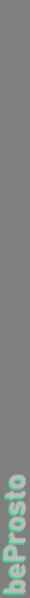
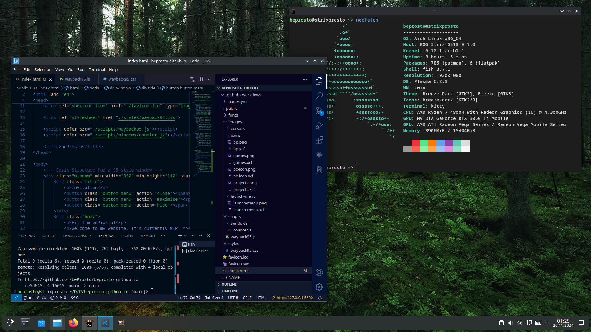

Here's a curated list of the projects which I'm the most proud of :p
Open Windowing Library is a C++ library that allows the user to create windows, display stuff on them and manage their events on Linux and Windows. It supports Software and OpenGL rendering. :D
At the time of it's creation it was the only barebones WebXR tutorial - no external libraries like a-frame or Babylon.js. Just pure WebXR and WebGL. :p
It's a simple utility to share a keyboard between 2 computers on a local network. The server acts as the keyboard's host and sends the inputs to the client. I created it because I broke my pc's keyboard and I wanted to temporarily use my laptop as a keyboard. ^^'
Supports both windows and linux!
Here's how I set up my new Arch install: :D
It's a really simple setup but I wanted to save it here in case I ever want to recreate it on another machine: